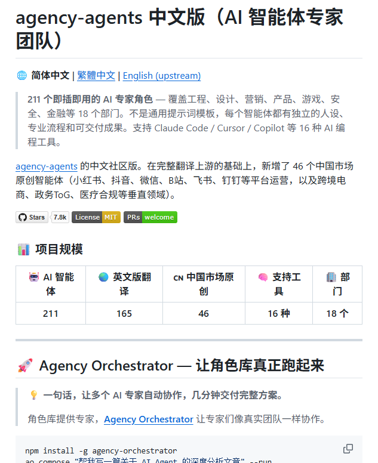
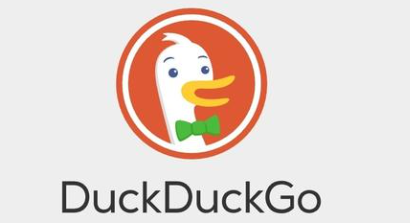
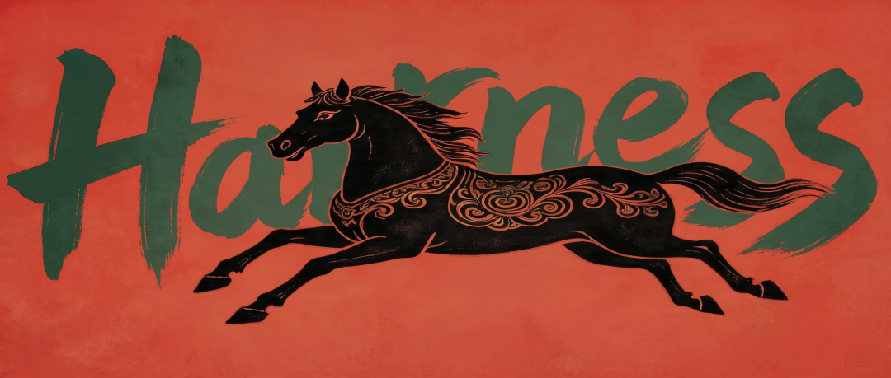

朋友们，这是一个让我震惊的发现：
同样是 Hermes，裸装版和满配版，完全是两个物种。
我装上 Hermes 之后用了将近一周，感觉”还行，能用”。后来看到有人晒出满配版的效果——长期记忆、全网抓取、语音图片生成、Token 还消耗更少——我才意识到，我之前用的那个，根本就是个残废版。
我对裸装 Hermes 的评价是：还不如不装，因为它让你以为自己已经在用最好的工具了。
下面这 7 步配置，是我花时间整理出来的满配路线图，按顺序来，别跳步。
一、写一个 SOUL.md，先告诉它你是谁
Hermes 裸装之后，它不知道你是谁、你做什么、你的工作风格是什么。每次对话都要重新交代背景，烦死了。
解决办法是写一个 SOUL.md，定义它的人格和角色。不会写？不用自己想。
有个 GitHub 库叫 agency-agents-zh，里面有 211 个中文角色模板，18 个部门分类，覆盖工程、设计、营销、产品、金融、HR……每个都是独立 .md 文件，有完整人设和专业流程。

地址：https://github.com/jnMetaCode/agency-agents-zh
【元小二学AI】👇公众号后台回复关键词【hermes】，领取从小白到高手的Hermes全套教程，有这整套角色模板。
找到你需要的角色，复制过来，告诉 Hermes 激活它，就能用了。这一步做完，你的 Hermes 才算”有灵魂”。
二、把内置记忆换掉，装上 Hindsight
这是最关键的一步，很多人直接跳过，然后抱怨”Hermes 记性太差”。
Hermes 内置的 MEMORY.md 有硬上限，只有约 2200 字符，而且只有它”觉得重要”的时候才会写入。跨会话记忆？基本靠脸。
Hindsight 完全不一样：它会自动从每轮对话里提取实体、事实、关系、时间戳，建立知识图谱。每次你开新会话，它在调用 AI 之前就把相关记忆注入进去了。
你说过你有一个电商项目、你的技术栈是 Python、你不喜欢写注释——它全记着，下次直接用。
配置方法很简单：
hermes memory setup
# 选择 hindsight，向导自动搞定
然后去 https://ui.hindsight.vectorize.io/connect 注册，拿个免费 API Key，验证一下：
hermes memory status
看到 auto-recall 和 auto-retain 亮了，就成了。
三、装上抓取工具，让它读懂整个互联网
裸装 Hermes 没法抓网页。你让它帮你调研竞品、整理行业资料，它只能干瞪眼。
装这四个工具：
Jina Reader：单页抓取，快
Crawl4 AI：批量深度抓取，强
Scrapling：反爬绕过，稳
CamoFox：隐身浏览器，专治登录墙
CamoFox 和 Scrapling 可以直接通过 hermes tools + pip 启用。不会装？直接告诉你的 Hermes，让它指导你一步一步来。
四、加上搜索 + 文档处理，搜索能力直接起飞
这几个工具装完，Hermes 的信息处理能力脱胎换骨：
Tavily：AI 专用搜索，每月 1000 次免费，质量远超普通搜索
DuckDuckGo：零成本兜底，Tavily 用完了还有它
Pandoc：万能格式转换器，Word、PDF、Markdown 随便互转
Marker：PDF 转 Markdown 精度增强版

以前让 Hermes 读一个 PDF，它抓瞎。装完 Marker 之后，高精度提取，直接用。
五、给它嘴和眼睛：装表达能力工具链
Whisper：语音识别，99+ 语言，本地运行，不上传云端
Edge TTS：语音合成，免费用
Fal.ai + FLUX Skill：图片生成，高质量出图
装完这一套，你可以对着 Hermes 说话，它能回你，还能给你画图。之前说过小龙虾openclaw的语音配置，可以参考：免费让AI开口说话！OpenClaw语音功能配置，发个指令就能搞定！
我之前要生成一张产品介绍图，要开 Midjourney，写 prompt，导出，再回来处理。现在直接在 Hermes 里说一句，它给我出图，全程不换工具。
六、精细管控 Token，省钱才是硬道理
这步很多人觉得”以后再说”，然后账单来了哭死。
RTK（Rust Token Killer） 是我最推荐的一个工具——它能把终端命令的 Token 消耗直接压掉 60% 到 90%。
# 安装
brew install rtk
# 或一键脚本
curl -fsSL https://raw.githubusercontent.com/rtk-ai/rtk/refs/heads/master/install.sh | sh
# 集成到 Hermes
rtk init -g
装完之后，所有 shell 命令自动走 RTK 过滤，ls、git status、git diff 全部压缩输出。Token 省的钱，过一段时间回头看，真的很可观。
配合 Tokscale 实时监控 Token 消耗：
npx tokscale@latest
tokscale --hermes # 只看 Hermes 的消耗
还有 hermes-hudui，一个 Web UI，14 个 Tab，按模型、会话、工具调用拆解 Token 去向，比官方 dashboard 强太多。
七、最后一步：认识 Hermes 生态全貌
awesome-hermes-agent：一站式资源汇总，你想要的工具基本都在
hermes-ecosystem：80+ 工具可视化地图，看完你会明白这个生态有多大
另外，wondelai 的 380 个跨平台 Skill 可以一次性装上，再从 awesome-agent-skills 的 1000+ 里按需挑。
技能库越丰富，Hermes 能帮你干的事就越多。这是一个正向飞轮，越用越强。
朋友们，Hermes 裸装就像买了一台跑车，连轮子都没装全就开上路——跑起来当然别扭。
按照这 7 步配置完，你才算真正拥有了一个 AI Agent，而不是一个会聊天的玩具。

赶快去配起来吧，期待你的反馈！
人生是一场无限游戏，乾坤未定，你我均是黑马。
【元小二学AI】👇公众号后台回复关键词【hermes】，领取从小白到高手的Hermes全套教程。
温馨提示：
公众号修改了推送规则，很多人发现收到的消息不及时。
为了能够第一时间收到消息，不错过优质的AI教程，请星标⭐置顶本公众号，以便第一时间获取精选内容！